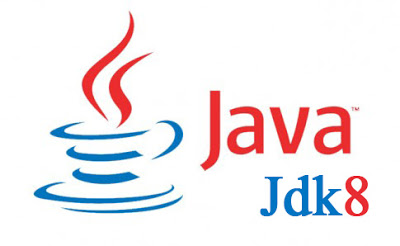
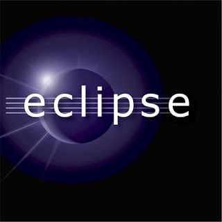

Download IDE & Tools Pemrograman
Kali ini saya akan membagikan IDE serta Toolkit berbagai pemrograman agar anda dapat memulai membuat program anda sendiri serta dapat mempraktekkan dalam proses pembuatan aplikasi dan Software dari IDE dan Toolkit yang ada. Berikut aplikasinya bisa langsung didownload.
Java Development Kit
Java Development Kit atau biasa disingkat JDK merupakan software yang digunakan untuk melakukan proses kompilasi dari java code ke bytecode yang dapat dimengerti dan dapat dijalankan oleh JRE (Java Runtime Envirotment). JDK berisi sekumpulan command line tool untuk menciptakan program java. JDK harus terinstall pada komputer yang akan melakukan pembuatan aplikasi berbasis java, namun tidak harus terinstall di komputer yang akan menjalankan aplikasi berbasis java.
Untuk mendownload langsung saja download melalui link resminya atau dibawah ini. Apabila link rusak atau mati, harap report ke saya agar saya dapat memperbaikinya dengan segera. Terima Kasih.
Eclipse
 Eclipse merupakan suatu IDE (Integrated Development Environment) yang berguna untuk mengembangkan perangkat lunak dan dapat dijalankan di semua platfrom (platfrom-independent).
Eclipse memiliki beberapa sifat yaitu :
Eclipse pada dasarnya adalah sebuah kernel yang mengangkat plug-in.Eclipse sendiri sebenarnya adalh fungsi dari plug-in yang sudah di install,serta memiliki basis yang dinamakan Rich Client Platfrom (RCP) yang terdiri sebagai berikut ini : Secara standard eclipse selalu di lengkapi dengan JDT (Java Development Tools) yang membuat eclipse kompatibel dengan pemrograman Java dan PDE (Pug-in Development Environment) untuk mengembangkan plug-in baru.Konsep Eclipse adalah IDE yang terbuka (open),mudah diperluas (extensible) untuk apa saja , dan tidak untuk sesuatu yang spesifik.Jadi eclipse tidak hanya untuk java namun juga bahasa pemrograman lainnya.Selain itu Eclipse dapat dikembangkan secara visual dengan plug-in UML2 yang di buat untuk diagram UML. Untuk mendownload langsung saja download melalui link resminya atau dibawah ini. Apabila link rusak atau mati, harap report ke saya agar saya dapat memperbaikinya dengan segera. Terima Kasih.